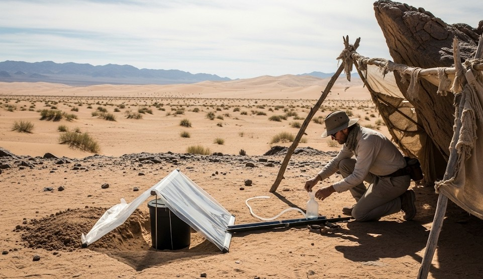

Desert Survival: Water & Shade Priorities
Objective
Produce safe drinking water without illness or recontamination.
Scenario (Example)
Example: 48°C basin, 10 km traverse, one marked spring, zero shade at noon.
Step-by-Step
- Collect mid-depth from clear flow; avoid sediment.
- Pre-filter cloth/coffee filter until turbidity drops.
- Treat: boil 1–3 min, filter 0.1 μm, chlorine dioxide 30–60 min, or UV on clear water.
- Protect treated water from recontamination; clean threads and cap.
Real Example
3L carried for 10 km; tarp shade at noon cut heart rate and water use ~20%.
Checklist
- People: count, injuries, capability, morale.
- Environment: terrain, weather, hazards, daylight.
- Resources: water, calories, heat, shelter, comms.
- Redundancy: Primary → Alternate → Contingency → Emergency.
Contingencies
- Heat exhaustion → stop/shade/electrolytes.
- Heat stroke → aggressive cooling + evacuate.
After-Action
Record what worked, what failed, and the first improvement to implement. Update your kit and this guide within 48 hours.
← Previous | All Articles | Next →